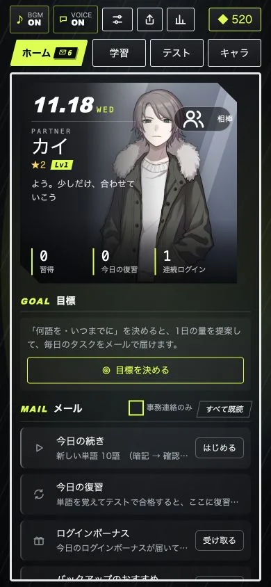

まずは、一語から。
カードで意味と例文を確認。
テストで、思い出せるか試してみる。
覚える。答える。仲間が増える。
英単語のいつもの練習に、
ガチャとキャラクターの楽しみを。
ダウンロード不要で始められるWeb版を公開中

NGSL ＋ NGSL-GR
ボイスつきのキャラクター
ブラウザ版を無料で
01 / THE EXPERIENCE
英単語 × ガチャ × キャラクター受験に向けて、基礎から学びたい。
でも、単語帳を開くまでが少し重い。
どぱたん＋は、そんな日の入口になる英単語アプリ。
答えた先に、得点がある。仲間がいる。
いつもの反復に、小さな楽しみを重ねていきます。
カードで意味と例文を確認。
テストで、思い出せるか試してみる。
連続正解で演出が変化。
テストの得点が、ガチャにつながる。
仲間になったキャラクターと、
絆に応じて開くストーリーを楽しむ。
上の図は仕組みを伝えるためのイメージです。アプリの実画面は下のプレビューで確認できます。
02 / PRESS PLAY
意味に合う英単語を選んでみよう。
思い出せた、その小さな手応えから。
LP用デモ
このページ専用の簡易体験です。
問題・得点・演出は本編とは異なり、
アプリの学習記録には反映されません。
日本語 → 英語
選んだ答えを、確かめてみよう。
03 / BUILT FOR LEARNING
楽しい、その先の学びへ。日本語から英語、英語から日本語へ。3択で答えを確かめながら、習得を積み重ねます。スペル入力で挑戦することもできます。
単語カードに例文と音声を用意。言葉がどんな場面で使われるのか、読む・聞くを組み合わせて確認できます。
習得済みの単語を、間隔を空けて確認。
復習のタイミングを、ホームから見つけられます。
BGMやキャラボイスは切り替え可能。
気分や場所に合わせて、自分のペースで。
04 / A LOOK INSIDE
実際のアプリ画面39人のボイスつきキャラクター。
好みの相棒と、次の一語へ。
学習の合間には、仲間の物語も。
2026年11月18日撮影 / Web版 v2.08
画面や機能は開発に伴い変更される場合があります。
05 / UNDER DEVELOPMENT
開発ログを読むどぱたん＋は、個人開発で更新中。
試したことも、直したことも。
Room_25の開発ログに残しています。
5,051語の単語学習、確認テスト、復習。
キャラクター・ガチャ・ストーリーを備えた
Web版を、今すぐ遊べます。
文法・読解・リスニング・発音への展開や、
動くキャラクター表現を検討中。
現行Web版の提供機能ではありません。
公開日・提供内容は未定です。
構想の出典：Room_25 開発ログ（2026年11月17日）。将来の実装をお約束するものではありません。
06 / ABOUT ROOM_25
Room_25は、英単語アプリ「どぱたん＋」をつくる個人開発ブランドです。
頑張りたいのに、なかなか始められない日にも。
学ぶことと、遊ぶことのあいだに、
もう一度戻ってこられる場所をつくっていきます。
07 / GOOD TO KNOW
気になることを、ここで少し。
現在公開中のWeb版は無料で利用できます。まずはブラウザで開いて、学習やキャラクターとの体験を試してみてください。将来の有料コンテンツについて、価格や提供日をこのページで案内しているものはありません。
「ブラウザで無料で遊ぶ」からアプリを開き、初回ガイドに沿って進めてください。単語カードで確認し、テストへ進むのが基本の流れです。スマートフォンでもPCでも、Webブラウザからアクセスできます。
NGSLの2,809語とNGSL-GRの追加2,242語、合わせて5,051語を収録しています。大学受験などに向けた基礎語彙の学び直しにも使えますが、特定の入試・資格試験の出題範囲をすべて網羅する教材ではありません。
BGMやキャラクターボイスのON/OFFを切り替えられます。アプリの音設定で調整し、場所や気分に合わせて使ってください。このLPのデモは音を再生しません。
アプリにはバックアップの書き出し・復元と、任意のクラウド保存機能があります。ブラウザのデータを削除したり端末を変えたりする前に、アプリ内の「設定 → データ」で保存方法を確認してください。
現在このページから案内しているのはWeb版です。公式リンク集ではGoogle Play版を公開準備中として案内しています。配信日やストアへのリンクは、公式リンク集で最新情報をご確認ください。